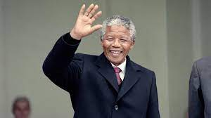

Nelson Mandela
The man who changed the world

Nelson Mandela, former president of South Africa in the year between 1994 to 19
This is a time line of Nalson Mandela
- 1918 - Born in Mvezo, South Africa.
- 1933 - Began his secondary education at Clarkebury Methodist High School in Engcobo.
- 1937 - He moved to Healdtown, the Methodist college in Fort Beaufort attended by most Thembu royalty.
- 1939 - Began work on a BA degree at the University of Fort Hare.
- 1938 - Marries wife of 69 years Margret Gibson. Gets laid off due to budget cuts. Inspired by Elvin Charles Stakman, he returns to school study under Stakman, who teaches him about breeding pest-resistent plants.
- 1940 - Mandela found that Jongintaba had arranged marriages for him and Justice; dismayed, they fled to Johannesburg via Queenstown
- 1941 - Mandela found work as a night watchman at Crown Mines, his "first sight of South African capitalism in action", but was fired when the induna (headman) discovered that he was a runaway<
- 1944 - Rejects a 100% salary increase from Dupont, leaves behind his pregnant wife, and flies to Mexico to head a new plant pathology program. Over the next 16 years, his team breeds 6,000 different strains of disease resistent wheat - including different varieties for each major climate on Earth.
- 1950 - crosses a short, sturdy dwarf breed of wheat with a high-yeidling American breed, creating a strain that responds well to fertilizer. It goes on to provide 95% of Mexico's wheat.Mandela took Xuma's place on the ANC national executive and that same year was elected national president of the ANCYL.
- 1952 - Mandela was arrested under the Suppression of Communism Act and stood trial as one of the 21 accused
- 1990 - Mandela served 27 years in prison, split between Robben Island, Pollsmoor Prison and Victor Verster Prison. Amid growing domestic and international pressure and fears of racial civil war, President F. W. de Klerk released him in 1990.
- 1993 - He was aworded the Nobel Peace Prize
- 1994 - The presidency of Nelson Mandela began on 10 May 1994, when Nelson Mandela, an anti-apartheid activist, lawyer, and former political prisoner, was inaugurated as President of South Africa, and ended on 14 June 1999.
- 2004 - Aged 85 and amid failing health, Mandela announced that he was "retiring from retirement" and retreating from public life, remarking
- 2013 - Dies at the age of 95.
"We will not likely see the likes of Nelson Mandela again," the President said. "So it falls to us as best we can to forward the example that he set: to make decisions guided not by hate, but by love; to never discount the difference that one person can make; to strive for a future that is worthy of his sacrifice."
-- USA President Barack Obama.